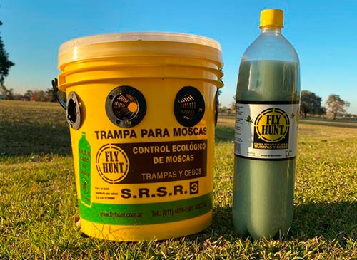
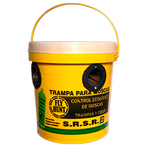
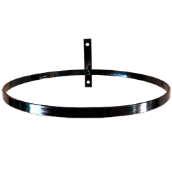

¿Cómo se usa el producto?
En primer lugar, se colocan los conos en los laterales de la trampa. Luego, se vierte el cebo entero dentro de la misma. Por último, se agregan 3 litros de agua y se tapa la trampa, una vez quitado el precinto correspondiente.

Cuando la trampa llega, lo más importante es quitar los elementos de la caja ordenadamente. En ella, encontraremos tres partes principales: la trampa principal en donde quedarán atrapadas las moscas, el cebo que las atrae y un contenedor que posee al
soporte para colocar a la trampa en altura. Resulta fundamental seguir rigurosamente las instrucciones que vienen en el manual confeccionado para el armado de la trampa.
Dependiendo del tamaño del cebo (grande o mediano) habrá que diluirlo en 1,5 litros o en 0,5 litros de agua respectivamente.Para evitar accidentes, es fundamental respetar las proporciones indicadas en el manual de instrucciones.Asimismo,
hay que tener cuidado a la hora de abrir y volcar el cebo en la trampa porque es un producto que genera mucho olor. id est laborum
El soporte es esencial para que la trampa trabaje correctamente. Hay que colocarlo a 2 metros sobre la altura del suelo. Algunos ejemplos pueden ser: arboles altos o muros de gran altura. Utilizar siempre
el soporte original homologado por FlyHunt para evitar incovenientes.
Para colocar el cebo, lo primero que hay que hacer es abrir la tapa de la trampa. Para ello, se quita el precinto principal y posteriormente se activa la traba de seguridad. Una vez realizado lo mencionado, se destapa la botella del cebo y recien ahí
se vuelca el mismo en el interior de la trampa FlyHunt.
La trampa FlyHunt únicamente se utiliza en ambientes que se encuentren al exterior. De lo contrario, la trampa pierde su eficacia y, por ende, su esencia. Las formas de uso y las variantes de lugares en
donde la misma puede ser colocada, se encuentran especificadas en el manual de uso para el usuario que viene en el paquete de instalación de la trampa.
Resulta imprescindible que las moscas sean extraidas constantemente de las trampas. Para ello, hay que utilizar el colador oficial de la compañía, el cual se acompaña en el kit inicial de productos a utilizar. La limpieza de la trampa grande se debe efectuar cada 2 semanas, y la de la trampa mediana cada 1 semana.
Nuestros productos
A continuación se presenta el detalle y la variedad de nuestros productos

Trampa grande - Cod. TG101
$1399
Compuesta por 1 balde, 8 conos y 1 cebo de 1,5 litros que dura 30 dias
Ver másTrampa mediana - Cod. TM102
$999
Compuesta por 1 balde, 4 conos y 1 cebo de 1 litro que dura 15 dias
Ver más

Aro de soporte - Cod. AS106
$1799
Aro regulable de soporte para cualquier tamaño de trampa
Ver más